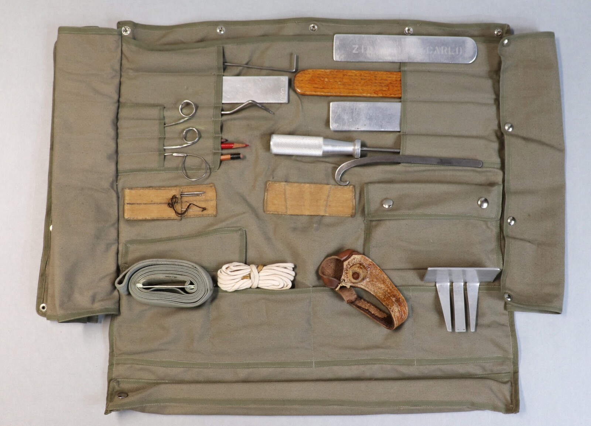
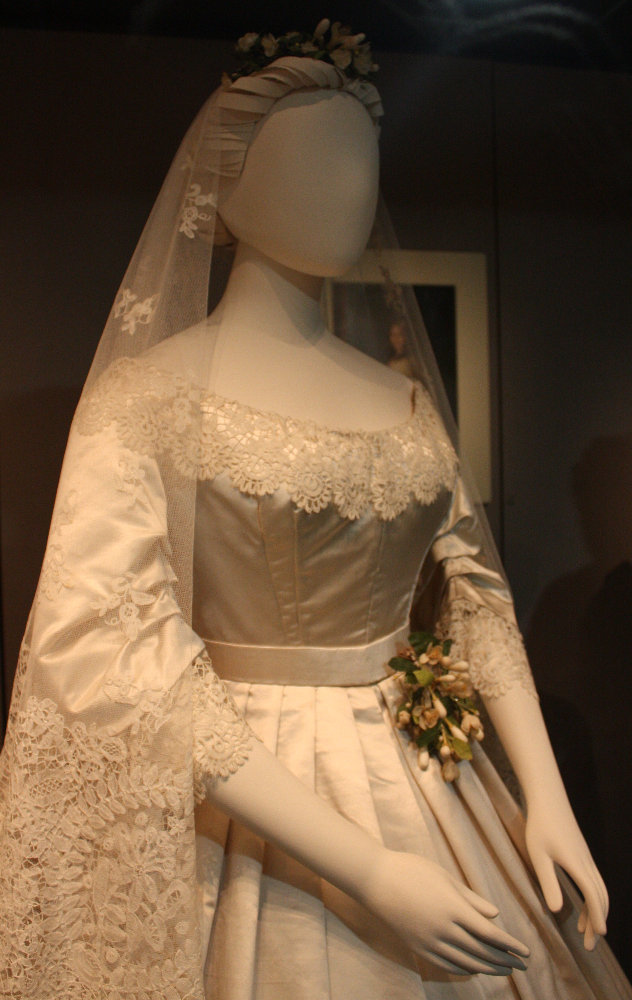
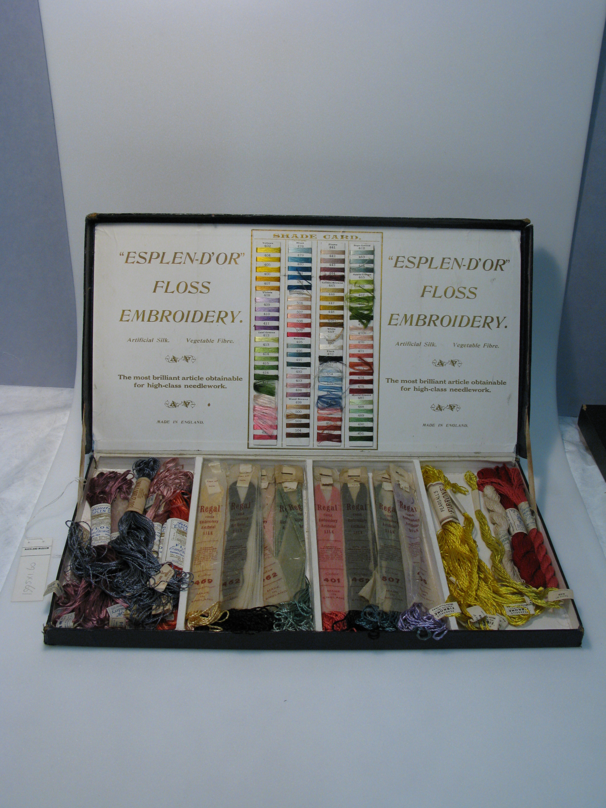
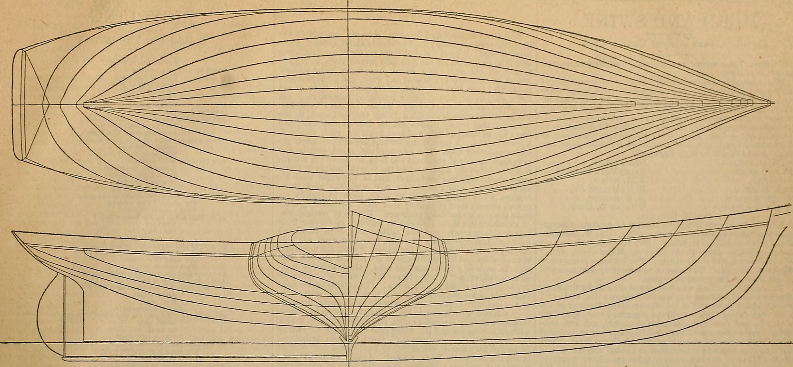
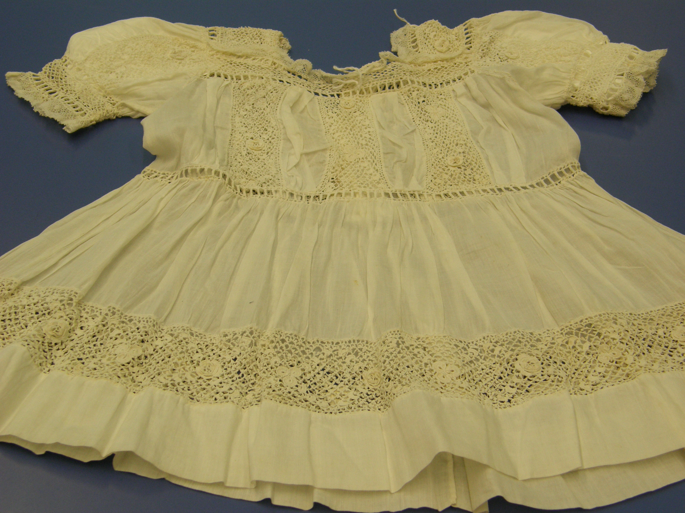
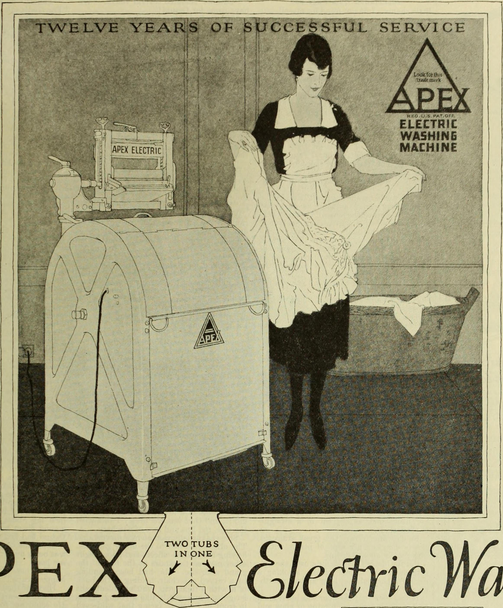

Bespoke Eyelet Portfolios
Individually patterned to anatomical measurements, hand-pierced by master embroiderers, and finished with delicate heirloom cutwork scallops.

The Sovereign Broderie Blouse
Inspired by the grand summer wardrobes of the Belle Époque, our signature high-neck blouse is cut from pure Swiss cotton batiste and embellished with over three hundred hand-bound eyelets across the bib and cuffs.
- Standing Victorian collar with hand-scalloped eyelet picot edging.
- Tuck-pleated front plastron framed by graduated floral cutwork garlands.
- Gathered bishop sleeves finished with buttonhole-stitched eyelet storm cuffs.
- Mother-of-pearl buttons hand-sewn with fine silk thread anchors.

The Scalloped Broderie Bridal Gown
For the discerning bride seeking romantic elegance beyond conventional beaded tulle, our bespoke Broderie Anglaise bridal gown unites architectural drape with breathtaking needlework detail.
- Individually draped muslin prototype fitted in our Mercer Street salon.
- Cascading tiers of scalloped eyelet embroidery linked seamlessly by hand.
- Concealed interior silk organza corset providing effortless posture support.
- Floor-sweeping cathedral train featuring personalized embroidered family botanicals.

The Corded Guipure Lace Capelet
Designed as an ethereal shoulder covering for summer galas or formal evenings, this delicate capelet features heavy corded guipure lace motifs interconnected by hand-stitched needle-lace brides.
- Dimensional raised floral appliques outlining shoulders and décolletage.
- Openwork lace construction allowing underlying gowns to shimmer through.
- Closure secured with a freshwater baroque pearl toggle and silk soutache loop.
- Feather-light weight of less than one hundred and forty grams.

The Mercer Street Bespoke Journey
Commissioning a bespoke garment at Broderie Flair is a collaborative artistic journey. Our patrons consult directly with head needlework designer Genevieve Laurent in our private SoHo fitting salon.
After recording thirty-two anatomical dimensions, clients choose from our archival library of over eighty nineteenth-century whitework prickings, or commission completely custom family crests, botanical motifs, and monogram cartouches.
Museum Christening Gowns & Archival Pressing
Crafted to be worn by generations, each heirloom commission is treated with museum-grade care and gentle steam blocking.

Heirloom RobeBespoke Heirloom Christening Robe
Continuous forty-inch skirt executed on fine Irish cambric linen, embellished with hand-scalloped eyelet tiers and personalized family monograms.

Steam BlockingReverse-Side Felted Wool Pressing
Gentle steam blocking executed face-down on dense felted wool mats, preserving the three-dimensional loft of padded satin stitches.